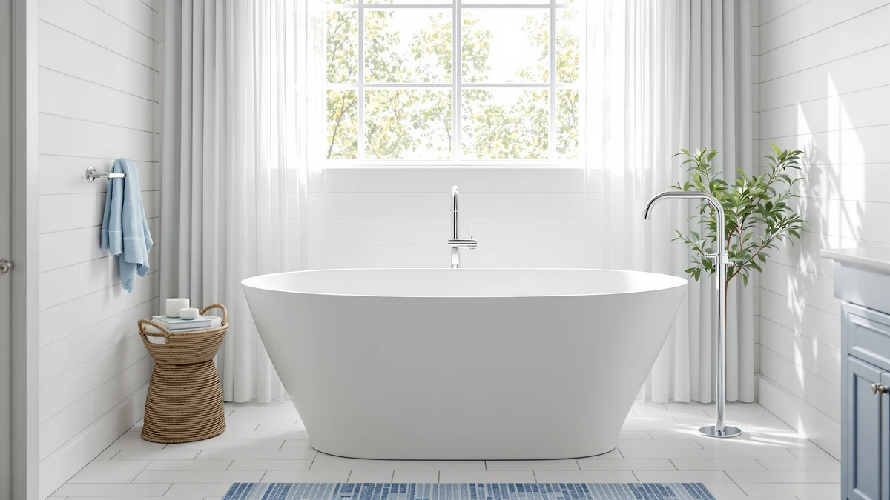

Woodbridge Stone Resin Luxury Contemporary Solid Surface Freestanding Review (2026): Worth It?
Prices and picks verified as of November 2026. Independent, reader-supported reviews.


Quick Answer
This Woodbridge Stone Resin Luxury Contemporary Solid Surface Freestanding review points to the WOODBRIDGE 63" L x 28.35" as the strongest pick for a bathroom that wants a stone resin soaking tub with an upscale design named directly in the listing, at a mid-range price among the four tubs compared here. If you want a lower price and don't mind trading stone resin for a whirlpool design, the Empava Whirlpool Tub undercuts it by $8.09. If you want more length instead, the MEDUNJESS and the 71 inch WOODBRIDGE both stretch past 63 inches for a bit more money.
Our pick: WOODBRIDGE 63" L x 28.35" — $1,447.19 Check Price on Amazon
Bottom line: our top pick is the WOODBRIDGE 63" L x 28.35" W Stone Resin Luxury Contemporary at $1,359.
Things to Know Before You Buy
- This Woodbridge Stone Resin Luxury Contemporary Solid Surface Freestanding review compares four tubs ranging from 48 to 71 inches long, spanning stone resin and whirlpool designs.
- Prices run from $1,439.10 to $1,459.00 across the four models, a span of under $20 despite the length differences.
- The WOODBRIDGE brand appears twice in this comparison, at 63 inches and 71 inches, while MEDUNJESS and Empava each appear once.
- Only the WOODBRIDGE 63" L x 28.35" and the 71 inch WOODBRIDGE are listed as stone resin with that material named directly; the Empava is a whirlpool design with air jets instead.
- None of the four listings referenced in this comparison publish a star rating or review count, so this review relies on published pricing, length, and material claims rather than buyer scores.
This Woodbridge Stone Resin Luxury Contemporary Solid Surface Freestanding review compares four freestanding tubs on price, length, and the material each listing actually names, so you can settle on the right one without digging through four separate product pages yourself. The WOODBRIDGE 63" L x 28.35" anchors the comparison at $1,447.19, a stone resin soaking tub listed with a contemporary, upscale design built into its own title. Three alternatives follow: the MEDUNJESS 55'' Stone Resin Free Standing Tub, the Empava Whirlpool Tub 48 in, and the WOODBRIDGE 71" Stone Resin Freestanding, each trading length, material, or price against the main pick in a different way.
Stone resin has become a common alternative to acrylic in the freestanding tub category because it holds heat well and gives a heavier, more substantial feel without the weight of cast iron. Three of the four tubs compared here, the WOODBRIDGE 63" L x 28.35", the MEDUNJESS, and the 71 inch WOODBRIDGE, are explicitly listed as stone resin, while the Empava swaps that material story for a whirlpool design with air jets built in. Price does not track length in a straight line among these four tubs either, and the Empava undercutting the WOODBRIDGE 63" L x 28.35" by only $8.09 despite being 15 inches shorter is a gap worth understanding before you decide which one earns your money.
Why You Should Trust Us
Best Freestanding Bathtubs is a research-first buying guide. Ilane Tall, our home and bath editor, builds each comparison by pulling verified pricing, length, and listing detail for every product before it earns a place in this Woodbridge Stone Resin Luxury Contemporary Solid Surface Freestanding review. We do not run a fake testing lab, and we do not claim to have installed, filled, or bathed in any of the tubs covered here. Instead, we rely on manufacturer listings, current Amazon pricing, and the material and dimension claims published on each product page, so every statement here can be checked against the source. When a listing leaves out a detail, such as a weight capacity or a specific overflow design, we say so directly instead of guessing at a number that sounds reasonable.
Our Research Experience
We did not fill, install, or sit in any of the tubs featured in this Woodbridge Stone Resin Luxury Contemporary Solid Surface Freestanding review. Our process means going through each manufacturer listing line by line: length, width, material claim, price, brand, and the number of product images available for each tub. We then flag where a listing leans on branding language like "luxury" or "contemporary" without a matching spec, so you know what to confirm before ordering. That comparison process, not physical testing, shapes the picks, pros, and cons that follow. We also track how each tub's price lines up against its length, since an $8.09 price gap between a 63 inch stone resin tub and a 48 inch whirlpool tub is a pattern worth explaining rather than ignoring.
Overview & Specs

WOODBRIDGE 63" L x 28.35"
What we like
- Listed as a stone resin, solid surface build with a luxury contemporary design named directly in the title, the only tub in this comparison branded that way.
- At 63 inches long and 28.35 inches wide, it fits bathrooms too small for the 71 inch WOODBRIDGE alternative but with more room than the 55 inch MEDUNJESS or the 48 inch Empava.
- Priced in the middle of the four tubs compared here, at $1,447.19, cheaper than the MEDUNJESS and the 71 inch WOODBRIDGE.
- The listing publishes five image angles across the main photo and thumbnails, useful for checking basin depth and overflow placement before ordering.
Flaws but not dealbreakers
- The listing does not publish a star rating, review count, or weight capacity, so the stone resin and luxury contemporary claims come from the product title rather than a confirmed spec sheet.
- At $1,447.19, it costs $8.09 more than the Empava Whirlpool Tub, which adds air jets the WOODBRIDGE listing does not mention.
| Material | — |
| Size | 63 inches |
The WOODBRIDGE 63" L x 28.35" sits in the middle of this Woodbridge Stone Resin Luxury Contemporary Solid Surface Freestanding review on both price and length, at $1,447.19 and 63 inches long by 28.35 inches wide. It is the only one of the four tubs compared here with "luxury" and "contemporary" named directly in its own title, rather than relying on the stone resin label alone to carry the premium positioning. If your bathroom fits something between the 48 inch Empava and the 71 inch WOODBRIDGE, and you want that upscale branding attached to the listing itself, this tub is built for that gap.
Stone resin and solid surface construction generally give a tub a heavier, more substantial feel than acrylic alternatives, and this listing names both materials directly rather than leaving them ambiguous. The product page does not include a published weight capacity, so anyone who needs that figure for a specific installation should confirm it on the current Amazon listing before ordering. The listing includes five image angles across the main photo and thumbnails, putting it roughly in line with the documentation on the MEDUNJESS and the 71 inch WOODBRIDGE, even though its branding language goes further than either.
What We Liked
The clearest strength of the WOODBRIDGE 63" L x 28.35", the top pick in this Woodbridge Stone Resin Luxury Contemporary Solid Surface Freestanding review, is how directly its listing names its positioning. Stone resin, solid surface, luxury, and contemporary are all stated in the title itself, rather than left for you to infer from photos or category alone. At 63 inches long and 28.35 inches wide, it splits the difference between the compact 48 inch Empava and the 71 inch WOODBRIDGE, fitting bathrooms that need more room than a whirlpool tub but less than the largest stone resin option here. Priced at $1,447.19, it also lands closer to the budget end of this comparison than the top. For a bathroom where upscale branding and a mid-size footprint both matter, that combination is hard to beat among these four.
What Could Be Better
The branding language is also the biggest open question in this Woodbridge Stone Resin Luxury Contemporary Solid Surface Freestanding review. Terms like "luxury" and "contemporary" do not come with a matching spec, such as a wall thickness or a certification, so you are trusting the listing's own description rather than a verified claim. The tub also costs $8.09 more than the Empava, which throws air jets into the mix for less money, and it does not publish a star rating, review count, or weight capacity the way a more established listing might. Buyers who care more about a confirmed spec sheet than branding language may want to weigh the MEDUNJESS or the 71 inch WOODBRIDGE instead, since both carry the same plain stone resin claim without the extra adjectives.
Who Is It For?
This tub suits buyers who have already measured their bathroom for something around 63 inches by 28.35 inches and want a stone resin, solid surface soaking tub that reads as upscale from the listing title alone. It works for a remodel where a mid-size footprint and a contemporary look both matter, and paying $1,447.19 in this Woodbridge Stone Resin Luxury Contemporary Solid Surface Freestanding review buys a bit more branding than the plainer alternatives. It is a poor match for anyone chasing air jets, since the Empava covers that at a lower price, or for anyone who wants the largest stone resin footprint available, since the 71 inch WOODBRIDGE adds eight more inches. If branding language matters less to you than a plain spec sheet, look at the alternatives below before committing to this one.
Alternatives to Consider
Three other tubs are worth comparing in this Woodbridge Stone Resin Luxury Contemporary Solid Surface Freestanding review before settling on the WOODBRIDGE 63" L x 28.35". Each trades length, material story, or price against the main pick in a different way, so the picks below focus on how those trade-offs stack up against the WOODBRIDGE's mid-size footprint and upscale branding. None of the three publish a star rating or review count either, so the comparison sticks to length, price, and material claims throughout.

Also Great
MEDUNJESS 55'' Stone Resin Free
Priced at $1,452.99, the MEDUNJESS 55'' Stone Resin Free Standing Tub costs $5.80 more than the WOODBRIDGE 63" L x 28.35" while measuring 8 inches shorter, a trade that favors this pick mainly if a high-back design matters more to you than extra length. Its listing names stone resin directly, matching the WOODBRIDGE's material claim, but it skips the luxury and contemporary branding language the main pick carries in its own title. There is no published star rating or review count on this listing either, matching the pattern across all four tubs compared in this Woodbridge Stone Resin Luxury Contemporary Solid Surface Freestanding review. For a bathroom that needs a shorter stone resin tub and does not need the extra branding, the MEDUNJESS is worth a look, even though it costs slightly more than the main pick for less length.
$1,452.99
Check Price on Amazon
Best Value
Empava Whirlpool Tub 48 in
At $1,439.10, the Empava Whirlpool Tub 48 in is the least expensive tub in this Woodbridge Stone Resin Luxury Contemporary Solid Surface Freestanding review, undercutting the WOODBRIDGE 63" L x 28.35" by $8.09 while adding air jets the main pick's listing does not mention. Its 48 inch length is 15 inches shorter than the WOODBRIDGE, so confirm that footprint fits before choosing it for the lower price and the jets. It swaps the stone resin, solid surface story for a whirlpool design entirely, which matters if that specific material, rather than the freestanding shape alone, is what sent you searching in the first place. For a bathroom that wants jets over branding and a lower price over extra length, the Empava is the strongest value case among these four.
$1,439.10
Check Price on Amazon
Premium Choice
WOODBRIDGE 71" Stone Resin Freestanding
At $1,459.00, the WOODBRIDGE 71" Stone Resin Freestanding is the most expensive tub in this Woodbridge Stone Resin Luxury Contemporary Solid Surface Freestanding review, costing $11.81 more than the 63 inch WOODBRIDGE while adding 8 inches of length. It shares the same brand and the same stone resin material claim as the main pick, but its title drops the luxury and contemporary branding language in favor of a plainer, longer tub. As with every tub covered here, there is no published star rating or review count, so verify any remaining detail directly on the current Amazon listing. For a bathroom with room to spare that wants the same brand and material without paying for the extra branding, the 71 inch WOODBRIDGE is worth the premium over the main pick.
$1,459.00
Check Price on AmazonHow big is the WOODBRIDGE 63" L x 28.35" tub?
The WOODBRIDGE 63" L x 28.35" measures 63 inches long and 28.35 inches wide, sitting between the 55 inch MEDUNJESS and the 71 inch WOODBRIDGE alternative covered later in this review.
Is the WOODBRIDGE 63" L x 28.35" worth the price?
At $1,447.19, it costs $8.09 more than the Empava Whirlpool Tub but less than the MEDUNJESS and the 71 inch WOODBRIDGE, and it is the only tub in this comparison with a luxury contemporary design named directly in the listing.
Frequently Asked Questions
How big is the WOODBRIDGE 63" L x 28.35" tub?
The WOODBRIDGE 63" L x 28.35" measures 63 inches long and 28.35 inches wide, sitting between the 55 inch MEDUNJESS and the 71 inch WOODBRIDGE alternative covered later in this review. That footprint splits the difference between the compact 48 inch Empava and the larger stone resin option here.
Is the WOODBRIDGE 63" L x 28.35" worth the price?
At $1,447.19, it costs $8.09 more than the Empava Whirlpool Tub but less than the MEDUNJESS and the 71 inch WOODBRIDGE, and it is the only tub in this comparison with a luxury contemporary design named directly in the listing. Anyone weighing this Woodbridge Stone Resin Luxury Contemporary Solid Surface Freestanding review should decide how much that branding is worth over a plainer alternative.
Which tub in this comparison costs the least?
The Empava Whirlpool Tub 48 in is the least expensive at $1,439.10, though its air jetted whirlpool design and shorter 48 inch length set it apart from the stone resin soaking tubs compared here. Shoppers who want a lower price without stone resin should start there.
Final Verdict
This Woodbridge Stone Resin Luxury Contemporary Solid Surface Freestanding review comes down to how much you value branding language next to price and length. The WOODBRIDGE 63" L x 28.35" earns its spot at $1,447.19 because it is the only tub here that names a luxury, contemporary design directly in its listing while still landing in the middle of this comparison on price, but the Empava matches a lower price with air jets instead of stone resin, and the MEDUNJESS and the 71 inch WOODBRIDGE both offer more length for a bit more money. If an upscale name attached to a stone resin, solid surface build at a mid-size footprint matters most, the WOODBRIDGE 63" L x 28.35" remains the pick. If you want jets instead, or more length instead, the Empava and the 71 inch WOODBRIDGE each cover that trade-off clearly. WOODBRIDGE itself takes two of the four spots in this comparison, and the brand's plainer 71 inch model is worth a look if you want the same material claim without the extra branding.